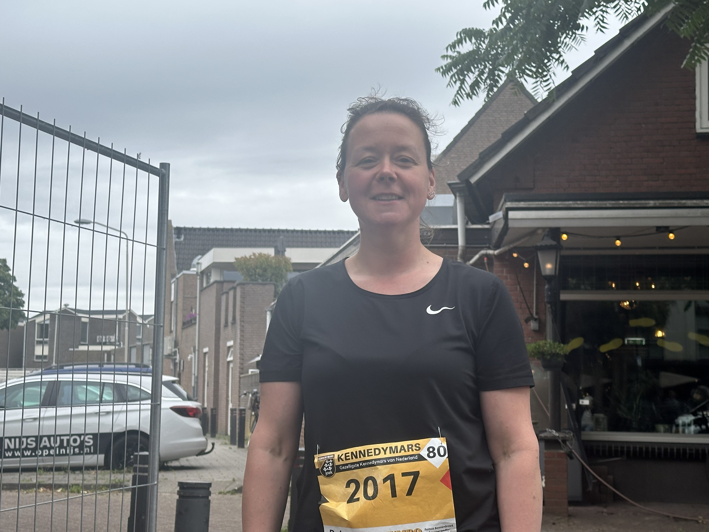

<!DOCTYPE html>
<html>
<head>
  <meta charset="utf-8" />
  <title>Kaart Kennedymars Someren</title>
  <meta name="viewport" content="width=device-width, initial-scale=1.0" />

  <!-- Leaflet CSS -->
  <link rel="stylesheet" href="https://unpkg.com/leaflet/dist/leaflet.css" />
  <!-- Leaflet JS -->
  <script src="https://unpkg.com/leaflet/dist/leaflet.js"></script>
  <!-- Leaflet Omnivore (voor .kml) -->
  <script src="https://unpkg.com/leaflet-omnivore/leaflet-omnivore.min.js"></script>

  <style>
    #map {
      height: 100vh;
    }
  </style>
</head>
<body>
  <div id="map"></div>

  <script>
  const startIcon = L.icon({
    iconUrl: 'start.png',
    iconSize: [32, 37],
    iconAnchor: [16, 37],
    popupAnchor: [0, -30]
  });

  const finishIcon = L.icon({
    iconUrl: 'finish.png',
    iconSize: [32, 37],
    iconAnchor: [16, 37],
    popupAnchor: [0, -30]
  });

  const map = L.map('map').setView([51.426158, 5.723665], 13);

  L.tileLayer('https://{s}.tile.openstreetmap.org/{z}/{x}/{y}.png', {
    attribution: '&copy; OpenStreetMap'
  }).addTo(map);

  const routeLayer = omnivore.kml('route.kml')
    .on('ready', function () {
      map.fitBounds(this.getBounds());

      this.eachLayer(function (layer) {
        if (layer instanceof L.Marker) {
          routeLayer.removeLayer(layer);
        }
      });

      let line;
      this.eachLayer(function (layer) {
        if (layer instanceof L.Polyline) {
          line = layer;
        }
      });

      if (line) {
        const latlngs = line.getLatLngs();
        const start = latlngs[0];
        const end = latlngs[latlngs.length - 1];

        // Start- en eindmarker
        // L.marker(start, { icon: startIcon }).addTo(map).bindPopup('<h3>Startpunt</h3><p>De wandeling begint hier! Je kunt het!</p>');
        // L.marker(end, { icon: finishIcon }).addTo(map).bindPopup('<h3>Eindpunt</h3><p>Gefeliciteerd, je bent er!</p>');

        // Popup 1 – Wilhelminaplein - Someren - tekst foto video
        L.marker(start, { icon: startIcon })
          .addTo(map)
          .bindPopup(`
            <h3>[Daniëlle Bankers - Someren]</h3>
            
            <p> <strong>Tijd: Zaterdag, 19:30</strong> tijd
            <strong>Wat: Daniëlle Bankers (43) uit Asten loopt de Kennedymars voor de zestiende keer. ,,Ik loop de tocht alleen in Someren, die vind ik het gezelligst”, vertelt ze een klein half uur voor het startschot klinkt. ,,Vroeger was het eerlijk gezegd nog gezelliger, toen liepen we ook door Heusden. Het is jammer dat ze dat uit de route hebben gehaald.” Ze hoopt morgen aan het einde van de ochtend binnen te zijn. ,,Geoefend heb ik niet, gewoon verstand op nul en lopen”, zegt de Astense met een grote lach.</strong> tekst.<br></p>
            <video width="250" controls>
              <source src="videos/mijnvideo.mp4" type="video/mp4">
            </video>
          `);

        // Popup 2 – Onze Lieve Vrouweplein - Ommel - tekst foto video
        L.marker(latlngs[306])
          .addTo(map)
          .bindPopup(`
            <h3>Kom later terug om het verhaal van deze plek te lezen.</h3>
            
          `);
        
        // Popup 3 – Vlierdensweg - Vlierden/Deurne - tekst foto
        L.marker(latlngs[343])
          .addTo(map)
          .bindPopup(`
            <h3>Kom later terug om het verhaal van deze plek te lezen.</h3>
            
          `);
        
        // Popup 4 – Frieslandpad - Rijpelberg/Helmond - tekst foto
        L.marker(latlngs[479])
          .addTo(map)
          .bindPopup(`
            <h3>Kom later terug om het verhaal van deze plek te lezen.</h3>
            
          `);
        
        // Popup 5 – De Veste - Brandevoort/Helmond - tekst foto
        L.marker(latlngs[631])
          .addTo(map)
          .bindPopup(`
            <h3>Kom later terug om het verhaal van deze plek te lezen.</h3>
            
          `);

        // Popup 6 – Sporthal - Lierop - tekst foto video
        L.marker(latlngs[815])
          .addTo(map)
          .bindPopup(`
            <h3>Kom later terug om het verhaal van deze plek te lezen.</h3>
            
          `);

        // Popup 7 – Kerkedijk/Eggendreef - Someren-Heide - tekst foto
        L.marker(latlngs[905])
          .addTo(map)
          .bindPopup(`
            <h3>Kom later terug om het verhaal van deze plek te lezen.</h3>
            
          `);

      // Wandelend poppetje toevoegen
        const walkerIcon = L.icon({
          iconUrl: 'loper.png',
          iconSize: [25, 25],
          iconAnchor: [16, 16]
        });

        const walker = L.marker(start, { icon: walkerIcon }).addTo(map);
        let i = 0;

        function moveWalker() {
          if (i < latlngs.length) {
            walker.setLatLng(latlngs[i]);
            i++;
            setTimeout(moveWalker, 100); // snelheid aanpassen
          }
        }

        moveWalker(); // start animatie
      }
    })
    .addTo(map);
  </script>
</body>
</html>
